Many previous examples demonstrated oomph-lib's ability to solve problems on domains with moving, curvilinear boundaries. These examples had the following common features:
- The motion of the curvilinear domain boundaries was prescribed.
- The domain was discretised by
Domain/MacroElement- based meshes. Recall that in such meshes the functionMesh::node_update()updates the position of all of its constituent nodes in response to changes in the shape/position of the geometric objects that define its curvilinear boundaries. The update of the nodal positions is performed on an element-by-element basis and each element determines the new positions of its nodes by referring to theMacroElementrepresentation of the domain. - The governing equations were implemented in their Arbitrary Eulerian Lagrangian (ALE) form, in which the mesh velocity is determined from the "history values" of the nodal positions.
We will now consider problems in which the position of the domain boundary is unknown and has to be determined as part of the overall solution. This situation arises, e.g., in free-surface fluid flow problems and in fluid-structure interaction problems. We shall explain why Domain / MacroElement - based node update strategies are unlikely to be efficient for such problems and then introduce the "Method of Spines" as one of a number of sparse (and therefore more efficient) node-update strategies available in oomph-lib.
Why we need sparse node updates
The sketch below shows a free-surface fluids problem in which the "height" of the fluid domain (parametrised by the scalar function 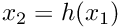) is unknown. The lower half of the sketch shows a body-fitted finite-element mesh (the nodes and elements are shown in dark blue) that discretises the fluid domain.
Assume now that we have some discrete representation of the unknown free surface so that 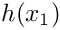 is approximated by a function that involves a finite number of discrete unknowns 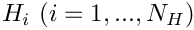 . In principle, this allows us to represent the unknown boundary by a GeomObject in which the unknowns play the role of "geometric
\c Data", i.e. Data whose values determine the shape of the geometric object. Once the curvilinear boundary is represented by a GeomObject, the update of the nodal positions in the "bulk" mesh could be performed by the Domain / MacroElement - based methods referred to above.
How exactly the unknowns are determined is irrelevant for the purpose of this discussion ( in free surface flow problems, the relevant equation is the kinematic free-surface condition discussed in another tutorial) – we simply assume that there are some equations that determine their values. The feature we wish to focus on here is that the solution of the problem by Newton's method requires the computation of the derivatives of all discrete residuals with respect to all unknowns in the problem. oomph-lib's Navier-Stokes elements compute the element residual vectors (the residuals of the discretised momentum and continuity equations, evaluated for the current values of the unknowns), and the derivatives of these residuals with respect to the elements' velocity and pressure degrees of freedom. Clearly, the entries in the element's residual vector also depend on the position of the element's constituent nodes, which, in a free-boundary problem, are determined (via the node update function) by the unknowns that discretise the position of the free surface.
The main purpose of this example is to demonstrate the use (and the creation) of so-called "spine meshes". Such meshes are similar to the MacroElement / Domain - based meshes employed in many previous examples, in that they allow the nodal positions to be updated in response to changes in the shape of their (curvilinear) domain boundaries. The key feature of "spine meshes" is that the node update can be performed on a node-by-node basis – this an important requirement for the efficient solution of free-boundary and fluid-structure interaction problems in which the position of the nodes in the "bulk
mesh" is determined by the (unknown) position of the domain boundary. The efficient evaluation of the so-called "shape derivatives" (the derivatives of the residuals of the equations discretised by the elements in the "bulk mesh" with respect to the unknowns that determine the position of the domain boundary)
The idea behind spine-based node updates is illustrated in the sketch below. Assume that the position of the domain boundary is parametrised by a scalar function, so that, for instance, 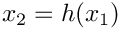, where 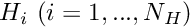 may have to be determined as part of the solution (e.g. in free-surface fluids problems – the origin of the "Method of Spines").
Further, assume that the mesh topology is such that the mesh's 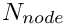 nodes are distributed along 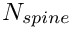 lines that are (topologically) orthogonal to the free boundary. We refer to these lines as the "spines" and denote the "height" of the domain, measured along spine 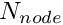 by 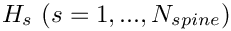. We associate each node with a particular spine (so that node  is located on spine 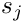) and locate it along a fixed fraction 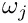 along "its" spine. The position of node may therefore be written as
is located on spine 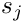) and locate it along a fixed fraction 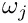 along "its" spine. The position of node may therefore be written as
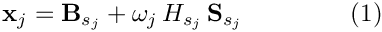
where 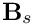 is the vector to the "base" of spine , and 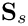 the unit vector along that spine.
A key feature of this method is that
Determining the nodal positions via the "Method of Spines" equation (1)
Spine-based node updates This document has two main parts:
- In Part 1: Flow through a channel of non-uniform width we demonstrate how to use a
SpineMesh - In Part 2: How to create a SpineMesh we explain the general "philosophy" behind spine-based node-updates and demonstrate their implementation.
Part 1: Flow through a channel of non-uniform width
The example problem
We shall illustrate the use of SpineMeshes by considering the problem of steady 2D flow through a channel of non-uniform width.
Solve 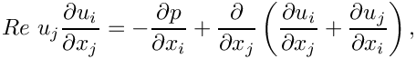 and 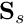 in the region 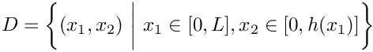, where 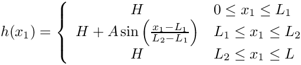 shown in this sketch
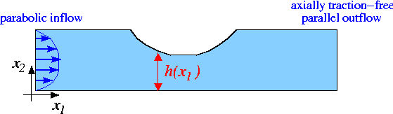
Sketch of the problem. subject to the no-slip Dirichlet boundary conditions on the top and bottom rigid walls 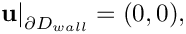 parallel, parabolic inflow on the left inflow boundary, 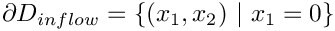 , 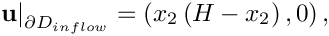 and axially traction-free, parallel outflow on the outflow boundary, 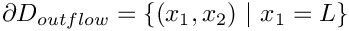 , 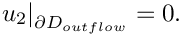 |
Results
The figures below show the results (carpet plots of the two velocity components and the pressure, and a contour plot of the pressure distribution with superimposed streamlines), obtained from computations with Taylor-Hood and Crouzeix-Raviart elements for a channel of length 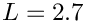 , height 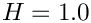 , with deflection amplitude 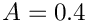, and a Reynolds number of 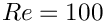.


Global parameters
The Reynolds number is the only parameter in this problem. As usual, we define and initialise it in a namespace:
The driver code
We start by creating a DocInfo object to define the output directory.
When using spines, we must use elements augmented by the SpineElement<ELEMENT> class. This class, adds the functionality to be updated using the method of spines (i.e storing a vector of pointers to the spines and allocating equations numbers associated with the spines degrees of freedom). We build the problem using SpineElement<TayloorHoodElement<2>>.
We now build and solve the problem with Spine-Taylor-Hood elements, then repeat for Spine-Crouzeix-Raviart elements.
The problem class
The problem class for this example is very similar to our previous steady Navier-Stokes examples . We store the height of the channel as private data, this is because we need it to set the inflow boundary condition.
Note that the absence of boundary conditions on the right boundary (1), causes a zero traction condition to be applied there. This implies that we should not fix a pressure degree of freedom.
The problem constructor
We begin by setting all the mesh parameters, and building it.
We then pin the velocities on the left, top and bottom boundaries (3,2 and 0).
Finally, we pass a pointer to the Reynolds number to each element and assign the equation numbers.
Part 2: How to create a SpineMesh
Spine-based meshes have their origin in free-surface fluid-mechanics problems where they were first (?) introduced by Kistler & Scriven in their paper
Coating Flows.'' In: Computational Analysis of Polymer Processing,'' Pearson, J.R.A. & Richardson, S.M. (eds.); Applied Science Publishers, London (1983). oomph-lib's SpineMeshes provide a generalisation of their node-update techniques.
In the past when solving a problem in a domain with curved boundaries, we have made a specific Mesh for the domain, and use a geometric object to define its curved wall(s).

To generalise this approach oomph-lib makes use of spines.
- A
Spineis most easily visualised a line of a certain height, in one coordinate direction. - A
SpineNodeis aNodelocated at a certain fraction along aSpine. - A
SpineMeshis aMeshwhich will update using spines. - A
SpineElement<ELEMENT>takes a "normal" element and adds the functionality to work with spines.
The creation of a SpineMesh is discussed in detail below Making a SpineMesh. While the picture above demonstrates the ability of SpineNode to individually update using the function spine_node_update(spine_node_pt).
Making a SpineMesh
In this example we use a SpineMesh to model the domain. This mesh constitutes three regions: left (0), centre (1) and right (2), the left and right regions have a constant height, while in the centre region the height varies. These heights are defined by two geometric objects, a straight line and a deflected line respectively. We will discuss the necessary steps taken to create this mesh (the complete documentation for this specific mesh can be found here ).
To begin, we create a new class templated by a element and inheriting from RectangularQuadMesh<ELEMENT> and SpineMesh. The latter adds the functionality needed for using Spines.
All SpineMeshs must include a function spine_node_update(SpineNode*
spine_node_pt), this will describe the operations performed when updating every SpineNode in the mesh. First we find the SpineNodes fraction along the spine.
We then get the local coordinate on the geometric object that defines the upper wall.
Finally we use the use the local coordinate to get the position of the geometric object and set the first coordinate value of the node.
We store the number of elements in the x direction in each region, the number of elements in the y direction, the lengths of each region and the height of the uniform boundary, as well as pointers to the two geometric objects.
All these details are passed to the constructor, except for the pointer to the geometric object for the uniform wall. The constructor calls the empty constructor for RectangularQuadMesh<ELEMENT>, copies these values to their storage in the mesh.
We then assign all the parameters for the RectangularQuadMesh<ELEMENT>, create the geometric object for the uniform wall and call the function build_channel_spine_mesh(...)
When we call the function build_channel_spine_mesh(...), it calls its counterpart in the RectangularQuadMesh<ELEMENT>, then store the numbers of elements in each direction in each region (and all at once).
We then allocate memory for the elements and spines in each region in each region.
Now we allocate storage for the parameters used to build the spines.
Now we create the first Spine with unit length, pin the height (since it is not a degree of freedom in this mesh) and push the spine back onto the Spine_pt.
We then set the spine_pt() of the first node to the Spine we just created, assign the nodes fraction() to zero and define the node as part of this mesh.
We then mark the node as part of the left (0) region.
When we built the Spine, we set its height to 1.0. We now need to assign its height from the Straight_wall_pt and assign all the information needed to update the mesh to the Spine.
First we set the value of 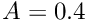 and get the geometric object and the local coordinate.
Then we store these geometric parameters in the Spine.
We then set the height of the Spine according to the geometric object.
Finally we set the Spines' pointer to the geometric object.
Now we loop vertically along the spine, adding a pointer to the spine to each element, and assigning the fraction for each node on this spine, define each node as part of this mesh, and mark it as part of the left region.
We then loop over the remaining spines in the left region repeating this process, except that the first spine in each element (except the first) is copied from the last spine in the previous element.
We then repeat this process for the centre and right regions, using the correct geometric objects to define the upper wall, which can be examined in detail here .
Exercises
- Investigate what happens when a pressure degree of freedom is fixed.
- Try creating a new geometric object, which creates a triangular indentation in the central region of the upper wall as shown.

PDF file
A pdf version of this document is available. \